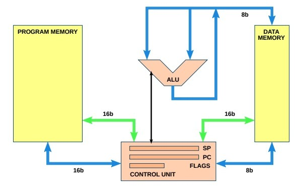

Welcome to SimulAVR’s documentation!¶
Created by: Pau Belmonte Marti, David Fernandez Pons and Llorenç Garcia Merino
{kind=link}
The project is structured around a serie of modules, each of them contains one or more classes that respresent part of architecture or related concepts.
BitVector: aontains several classes that aim to represent words of different lengths involved in the simulation.
Memory: Contains several classes that represent the different types of memory of the architect of the AVR.
State: Contains a class that represents the state (including memory) of the microcontroller.
Instruction: Contains the classes that implement the meaning of each and every one of the operations machine language that supports the simulator.
Repertoir: Contains a class that groups the simulator’s instruction repertoire.
AvrMcu: Contains a class that implements the general control of the microcontroller. It is like the class that brings together the other components.
intexhel: Written by another person, to manage with .hex files.
AVRException: Defines various classes of exceptions used in the simulator.
SimAVR: Main module of the simulator. The users of the simulator invoke this module to simulate programs.
Working time¶
We divided the working time in 6 diferent groups, they are showed on the following table:
Pau |
David |
Llorenç |
|
Estudi |
8 |
6 |
12 |
Desenvolupament |
4 |
7 |
62 |
Disseny de test |
0 |
0 |
20 |
Documentació |
4 |
4 |
31 |
Altres |
0 |
0 |
7 |
Total |
16 |
17 |
140 |